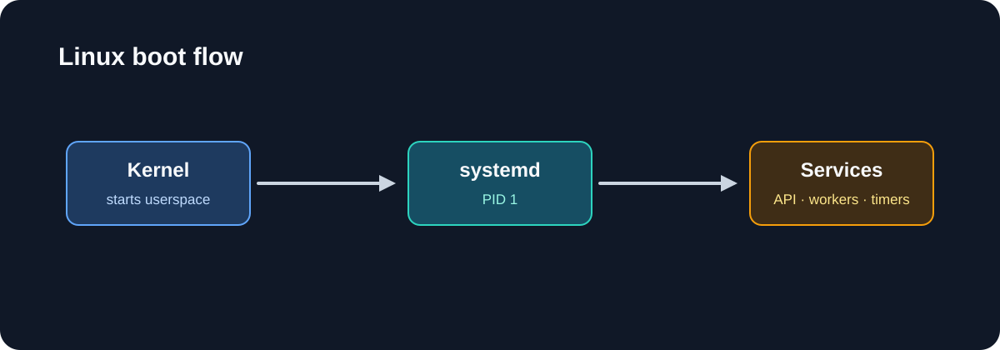
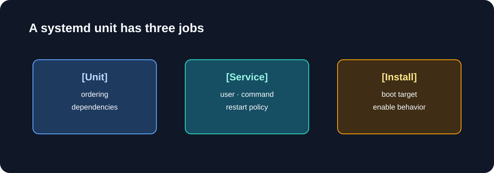
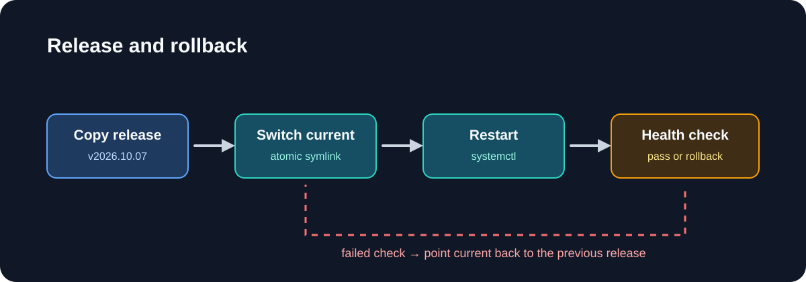

When I deploy an application directly to a Linux VM, systemd is the layer that turns its process into an operating-system-managed service. A process is only the program that happens to be running right now. A service also has a declared owner, working directory, environment, startup command, dependencies, restart policy, log destination, and boot behavior.
That distinction matters in production. Starting
dotnet MyApi.dll or node server.js from an
SSH session may prove that the binary works, but it does not define
what should happen after the terminal closes, the VM reboots, the
network becomes available late, or the application exits with an
error. A systemd unit makes those decisions explicit and gives the
operations team one control plane for status, lifecycle actions, and
logs.
In practice, systemd can start the service during boot, order it after required targets, restart it when it fails, stop it cleanly, limit the account and filesystem access it receives, and send stdout and stderr to the journal. It does not make unhealthy application code reliable by itself: the unit still needs sensible timeouts, a deliberate restart policy, health checks, and monitoring outside the process.
The operational lesson I learned the hard way is:
start affects now; enable affects future boots.
systemctl start can make a service available immediately,
while systemctl enable creates the boot-time relationship
that brings it back after the next restart.

What systemd actually does
systemd runs as PID 1, the first userspace process started by the kernel. It brings the host to a target state, starts units in dependency order, supervises long-running processes, and records service output in the journal.
A unit is a resource systemd knows how to manage. The most common ones are exactly the ones I rely on in production:
| Unit | Purpose | Example |
|---|---|---|
| service | Long-running process or one-shot command | api.service |
| timer | Schedules another unit | backup.timer |
| socket | Opens a socket and activates a service | sshd.socket |
| target | Groups units into a desired state | multi-user.target |
systemctl is the control plane
I start with systemctl status, then move to the smallest
action I need. The commands are simple, but their meanings are not
interchangeable.
sudo systemctl start app.service
sudo systemctl stop app.service
sudo systemctl restart app.service
sudo systemctl enable --now app.service
systemctl is-active app.service
systemctl is-enabled app.service
sudo systemctl daemon-reloadThe distinction I look for on every deployment is simple. A service can be active now and still be disabled for boot. That is a production mismatch waiting to happen.

Why unit files matter
A unit file at /etc/systemd/system/my-api.service usually
has three sections: [Unit], [Service], and
[Install]. That architecture is intentional because it
separates dependency ordering from runtime behavior and boot-time
activation.
[Unit]
Description=My API
After=network-online.target
Wants=network-online.target
[Service]
Type=simple
User=my-api
Group=my-api
WorkingDirectory=/opt/my-api/current
EnvironmentFile=/etc/my-api/my-api.env
ExecStart=/usr/bin/node /opt/my-api/current/dist/server.js
Restart=on-failure
RestartSec=5s
TimeoutStopSec=30s
[Install]
WantedBy=multi-user.targetI always make the executable, user, working directory, environment, and restart policy explicit. That reduces the chance of a deployment that appears healthy at the shell but fails when the VM restarts or a target pulls the service in at boot.
journalctl is where the truth lives
A unit's stdout and stderr normally land in journald. That gives me one place to inspect application startup without guessing which log file a framework chose.
# Recent logs for a service
sudo journalctl -u my-api.service --no-pager -n 100
# Follow logs in real time
sudo journalctl -fu my-api.service
# Check a previous boot
sudo journalctl -u my-api.service -b -1 --no-pager
# Errors in the current boot
sudo journalctl -p err -b --no-pagerIf I need to keep logs across reboots, I make journald persistent and monitor retention deliberately. The point is not to keep every log forever; it is to ensure the log trail still exists when the next reboot makes the previous stack trace relevant again.
Timers are better than ad hoc cron jobs
A timer is a systemd unit that activates a service. Compared with cron, timers give me journal integration, dependency handling, missed-run persistence, and the same operational lifecycle as every other managed unit.
[Timer]
OnCalendar=*-*-* 02:30:00
Persistent=true
RandomizedDelaySec=15m
[Install]
WantedBy=timers.targetThis is a better fit for production work like log cleanup, cache refresh, database vacuum jobs, and health checks that should still run after the host has been offline for a while.
The outage pattern: active now, disabled forever
This is the operational trap I see most often. A service is manually
started during a deploy, then nobody runs the persistent enable step.
The server reboots. The service remains missing. Or worse, an old
service is still enabled and it grabs the port after the reboot,
causing the new process to crash with EADDRINUSE.

Production deployment pattern
I prefer immutable release directories and a single symlink update. It is easier to reason about, easier to roll back, and easier to audit. The deployment itself should always check health before the new version is considered live.
new_release=${1:?release directory is required}
app_root=/opt/orders
service=orders.service
previous_release=$(readlink -f "$app_root/current" || true)
ln -sfn "$app_root/releases/$release_name" "$app_root/current"
sudo systemctl daemon-reload
sudo systemctl restart "$service"
if ! curl --silent --show-error --fail --max-time 10 "$health_url" >/dev/null; then
ln -sfn "$previous_release" "$app_root/current"
sudo systemctl restart "$service"
exit 1
fiThe key point is not only the shell script. It is the discipline of verifying both the running process and the persisted systemd state. Process health is part of the deployment. So is boot persistence.
Best-practice checklist
- Run each application as a dedicated non-root user.
-
Use
enable --nowfor the first production activation. - Keep unit files, environment files, and deploy scripts in Git.
- Enable persistent journald and monitor disk usage.
-
Use
Restart=on-failurewith a sensible retry delay. -
Assert both
is-activeandis-enabled. - Test reboot behavior in staging before production.
Key lesson
A production service is not just a process on a VM. It is a managed, boot-aware unit with a verified startup path, a health check, and an understood rollback story.